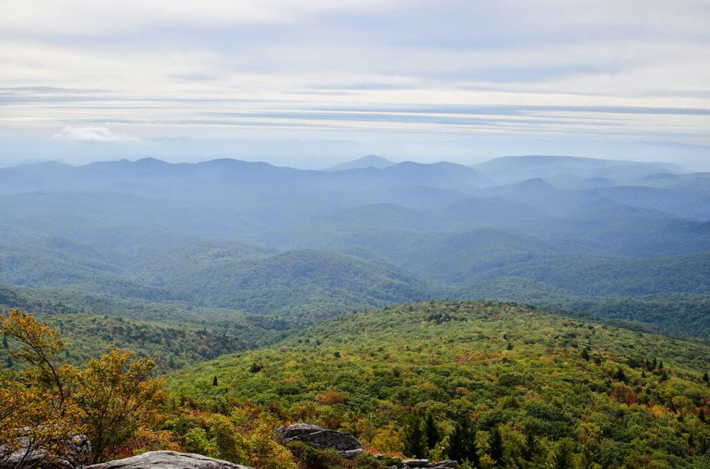

АВТОМАГИСТРАЛЬ БЛЮ РИДЖ
Автомагистраль Блю Ридж (Blue Ridge Parkway) – охраняемая парковая автодорога, известная во всем мире своими прекрасными видами. Это место наиболее посещаемая достопримечательность среди всех Национальных парков США.

Общая протяженность её составляет четыреста шестьдесят девять миль (семьсот пятьдесят пять километров); по большой части она проходит рядом с горным хребтом Блю Ридж, одним из основных массивов Аппалачей.
Земля по обе стороны дороги находится в ведении Национальной Парковой Службы; автомагистраль хотя и не является парком национального уровня, все же принадлежит к перечню Национальных Живописных Объездных Дорог и является самым посещаемым объектом во всей системе национальных парков.

Начались работы 11-го сентября 1935-го с горы Камберленд в Северной Каролине. Строительство магистрали заняло порядка пятидесяти двух лет. Последний отрезок – у виадука Линн Коув – был закончен в 1987-ом.
Трасса включает в себя ряд горных туннелей – один в Вирджинии и двадцать пять в Северной Каролине.
Главные достопримечательности Блу Ридж Парквей – это смотровые площадки на горы и водопады.
ВВЕРХ